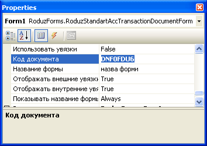

Рисунок 1. Параметры конструктора формы.

Рисунок 2. Код документа.
Для загрузки данных из БД необходимо выполнить всего 3 пункта:
Все три пункта касаются класса DataContext.
Итак пункт первый "Создать таблицы". Под таблицами подразумевается класс DataTable который будет хранить наши данные.
В контексте данных по умолчанию присутствуют два набора таблиц (DataSet), первый это набор таблиц данных, а второй это набор таблиц репозиториев.
Разница между ними заключается в том, что таблицы данных по умолчанию сохраняются в БД и позволяют обрабатывать события изменения а таблицы репозиториев нет, они служат лиш для отображения в данных в форме (например в выпадающем списке).
Для добавления таблицы в каждый из наборов существует специальные функции:
| Имя | Описание |
|---|---|
| AddDataTable(string tableName) | Создает новую таблицу данных с указаным именем и помещает ее в набор таблиц данных. |
| AddRepositoryTable(string tableName) | Создает новую таблицу репозитория с указаным именем и помещает ее в набор таблиц репозиториев. |
Тоже самое и для установки запроса на таблицу, существует два метода привязки запроса к таблице:
| Имя | Описание |
|---|---|
| AddStandartQueryToDataTable | Устанавливает запрос на выборку данных из таблицы данных (архива). |
| AddStandartQueryToRepositoryTable | Устанавливает запрос на выборку данных из таблицы репозитория (справочника). |
Отлично функции есть, но где их вызывать?? Ответ прост, в методе который отвечает за создание таблиц. Вообще, таких метода два, первый отвечает за создание таблиц данных а второй таблиц репозиториев.
| Имя | Описание |
|---|---|
| CreateDataTables | Метод для создания таблиц данных. |
| CreateRepositoryTables | Метод для создания таблиц репозиториев. |
Оба метода обявленны в базовом классе DataContexBase, для добавления методов в своем контексте данных их следует переопределить.
Допустим мы хотим что бы наш документ загружал данные из таблицы архива FNF0FDU6 (для первой подформы) и FNF0FDU6R14 (для второй подформы) и также содержал как справочную информацию, справочник станций.
protected override void CreateDataTables()
{
base.CreateDataTables();
AddDataTable("FNF0FDU6");
AddDataTable("FNF0FDU6R14");
AddStandartQueryToDataTable("FNF0FDU6", "select * from fnf0fdu6 where road={0} and god={1} and mes={2}");
AddStandartQueryToDataTable("FNF0FDU6R14", "select * from fnf0fdu6r14 where road={0} and god={1} and mes={2}");
}
protected override void CreateRepositoryTables()
{
base.CreateRepositoryTables();
AddRepositoryTable("NSISTATION");
AddStandartQueryToRepositoryTable("NSISTATION", "select * from nsistation");
}
Теперь у нас есть три таблицы и соответствующие запросы для выборки данных из БД. Остается последний пункт передача параметров. Параметры задаются в запросе в фигурных скобках с обозначением порядкового номера параметра. Установка значений параметров происходит непосредственно перед выполнением запроса а методе LoadTable, который обявлен в базовом классе DataContexBase и должен быть переопределен в контексте данных. Значения параметров указываются по порядку через запятую заменяя стандартный пустой масив _args (рис. 3).
В данном примере необходимо получить информацию о выбраном в документе (на момент загрузки) периоде, это можна зделать с помощью переменной formProperty, которая доступна в контексте данных.

Рисунок 3. Стандартный масив пустых значений, который необходимо заменить.
protected override void LoadTable(System.Data.DataTable table,
string queryKey,
params object[] _args)
{
RoduzForms.Data.FilterData currentFilter = formProperty.CurrentFilter;
base.LoadTable(table, queryKey, currentFilter.Road, currentFilter.sYear, currentFilter.sMonth);
}
После написания такого не хитрого кода, нам будут доступны 3 таблицы, две таблицы архива и таблица справочник. Причем данные из архивов будут выбиратся в зависимости от выбраного в документе фильтра.
В свойствах контекста данных на дизайнере формы следует указать имя таблицы шаблона проводок (рис. 4).
Рисунок 4. Имя таблицы шаблона проводок.
Теперь запустив приложение можно увидеть загруженный шаблон проводок.
Установка таблиц источников данных в подформах обычно выполняется в обработчике события Load конкретной подформы.
Доступ к таблицам в контексте выполняется через переменную экземпляр класса контекста dbDataContex.
//Файл MainDocumentUI.cs
private void MainDocumentUI_Load(object sender, EventArgs e)
{
if (DesignMode)
return;
gFormData.DataSource = dbDataContex["FNF0FDU6"];
}
//Файл MainDocumentUI2.cs
private void MainDocumentUI2_Load(object sender, EventArgs e)
{
if (DesignMode)
return;
documentTree.DataSource = dbDataContex["FNF0FDU6R14"];
}
Теперь запустив приложение можно увидеть результат (рис. 5-6).
Рисунок 5. Данные вкладки 1.
 д
д
Рисунок 6.Данные вкладки 2.
Вот впринципе и все нехитрые операции которые нужно проделать что бы получить основу для формы. В следующем разделе будет описано как добавить свою функциональность к этой основе.
{kind=link}